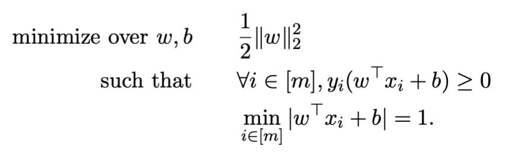
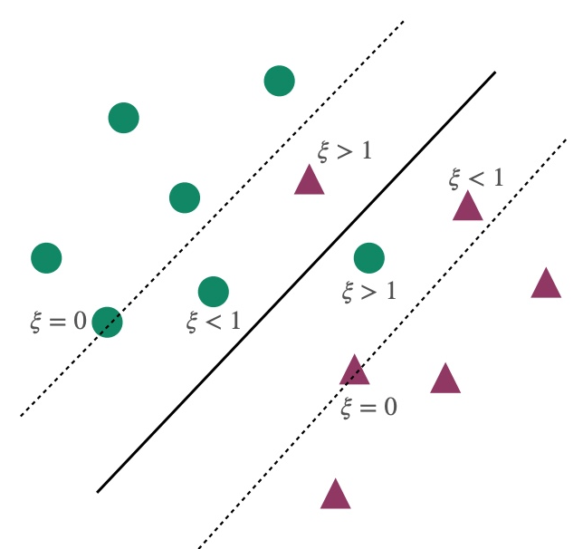
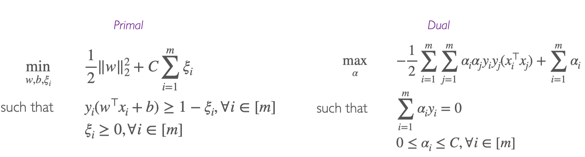

Linear SVM
set up
给了n个数据点 (x1,y1),...,(xn,yn)，yi 是1或者-1，指示 xi 属于哪个class。每个 xi 都是为p-dimension real vector。
SVM的目标是找到一个maximum-margin hyperplane，能够将所有点 xi 都按照 yi=1 和 yi=−1 分成两组，且使得hyperplane到两组点的nearest point的距离都最大。
SVM目的：找到一个hyperplane能够maximize margin
hyperplane定义
ω⊤xi+b=0
margin定义：距离hyperplane最近的那个点的距离
γ(w,b)=i∈[m]min∥w∥2∣w⊤xi+b∣
Hard Margin SVMs
假设：数据是可以被hyperplane ω∗⊤x+b∗=0 完全分隔的。
目标：找到一个classifier可以获得maximum margin
思路1：从几何的角度来理解（wiki思路）

首先，我们对 yi=1 和 yi=−1 这两组 xi 各自创建一个hyperplanes：
对 yi=1 的x而言，
hyperplane 1为 ω⊤x−b=1，包含了高于这个hyperplane的所有数据点
对 yi=−1 的x而言，
hyperplane 2为 ω⊤x−b=−1，包含了低于这个hyperplane的所有数据点。
hyperplane 1和hyperplane 2之间的距离为 ∥ω∥2，所以为了最大化这俩之间的距离，我们需要 min∥ω∥。
而且这两个hyperplane相互平行， 而我们要找的maximum-margin hyperplane ω⊤x−b=0 处于这两个hyperplane的正中间。
其次，我们将所有数据点都用公式表示为
yi=1 的所有数据点都满足 ω⊤xi−b≥1
yi=−1 的所有数据点都满足 ω⊤xi−b≤−1
上面两个式子可以综合一下，写成 yi(ω⊤xi−b)≥1，for all 1≤i≤n
最后，我们可以得出需要min的式子及其条件

这也可以写成sign函数的形式，sgn(ω⊤x−b)
思路2：从公式方面推导（上课思路）
将我们的目标写成数学公式就是

化简一下变成

同时为了解决不同scale会导致相同的solution的问题，我们通过增加下面这个条件将solution变得unique
i∈[m]min∣ω⊤xi+b∣=1
将上述条件带入原式

化简得到

可以发现这是一个quadratic optimization problem，通过化简使其变成convex quadratic optimization problem（obj func和constraint都是convex的）

求 omega 和 b
然后为了解决上面这个式子，也就是找到w和b可以min objective function，我们可以通过Dual formulation获得 ω，然后通过Support vectors获得b
初始化和思路

第一步，写出Lagrangian函数（注意αi>0）


第二步，通过对ω和b求偏导，并令其等于0得到

第三步，带回原式并化简得到

并满足

第四步，把dual function写出来就是

第五步，通过解第四步的式子，我们可以得到 α 。将 α 带入下式，得到 ω。

通过Support Vectors获得b
support vector定义：任何 αi>0 的数据点。也就是恰好落在边界上的点，满足 1=yi(w⊤xi+b)
我们假设SV={i∈[m]:αi>0}，也就是所有使得αi大于0的i的集合。
ω 进化为下式
ω=i∈SV∑αiyixi
通过KKT条件里面的complementary slackness condition得到下式

从而求出b
人话：我们有一堆可以使 α>0 的i，然后根据上面那个公式，每一个i都可以得到一个b（因为他们对应的 xi 和 yi 不一样），我们可以求平均来减少noise，得到更加准确的b
DUAL的结果

Soft Margin SVMs
假设：数据是无法被超平面完全分割的
由于是non-separable的，则 yi(ω⊤xi+b)≥1 是infeasible的，则我们可以通过添加slack variable来使其变得feasible
通过添加slack variable ξi（ξi≥0）来relax constraint我们得到

其中，
ξi=0 表示点i被正确分类，且满足最大边界条件 large margin constraint
0<ξi<1 表示点i被正确分类，但不满足最大边界条件 large margin constraint
ξi>1 表示点i没有被正确分类

为了保证 ξi 不是很大，我们在原式增加了penalty

其中C控制penalty的大小，如果C很大，则退化为hard-margin
上面这个式子还是convex quadratic optimization
problem，我们可以誊写dual为

然后按照和hard margin类似的步骤，通过dual来求解

从Min Loss的角度来看
Soft-SVM也可以写成min hinge loss的形式
lhinge(y,y)=max(0,1−yy)=max(0,1−yi(ω⊤xi−b))
如果 yi=sgn(wTxi−b) 的话，即 xi 在正确的class里面，则输出为0，否则输出 1−yi(ω⊤xi−b)，即点到margin的距离
则SVM可以写成（其中λ>0）
w,bminm1i=1∑mmax(0,1−yi(w⊤xi+b))+λ∥w∥2
通过引入slack variables后，可以写成

此时我们可以发现，如果令 C=2λm1 ，则这个式子就是soft-SVM
小结
Hard-Margin SVM
最优化函数

classification vector ω
ω=i=1∑mαiyixi
supply vector
SV={i∈[m]:0<αi}
求解b
b=yi−ω⊤xi
prediction function
sign(ω⊤x+b)=sign(i=1∑mαiyixi⊤x+b)
Soft-Margin SVM
最优化函数

classification vector ω
ω=i=1∑mαiyixi
supply vector
SV={i∈[m]:0<αi<C=2nλ1}
求解b
b=yi−ω⊤xi
prediction function
sign(ω⊤x+b)=sign(i=1∑mαiyixi⊤x+b)
Non-Linear Kernel SVM
概念
目的：解决non-linear separable的数据，且不是添加slack就可以解决的，比如两个圆圈。
思路：为了separate，我们通过feature map ϕ将data 映射map到更高的维度，即x↦ϕ(x)
方法：通过将dot product替换为non-linear kernel
例子


通过 ϕ 线性化数据，得到新的predictor function
通过feature mapϕ，将training data从non-linear的input space，投射到linear 的feature space：
{(x1,y1),...,(xm,ym)}↦{(ϕ(x1),y1),...,(ϕ(xm),ym)}

因此我们获得了linear predictor function：
ω⊤ϕ(x)+b
其中ϕ(x)为下式，d表示x的维度
ϕ(x)=[1,x1,...,xd,x12,x1x2,...,xd2]⊤
用Soft-SVM的方法，求解最优化的function
因为直接求解维度太大了，所以通过Soft-SVM的方法来求解

等价于求解inner productϕ(x)⊤ϕ(x′)
我们可以将其化为
ϕ(x)⊤ϕ(x′)=1+x⊤x′+(x⊤x′)2
构建kernel
为了简化求解过程，我们设kernel k∈R为
k(xi,xj)=<ϕ(xi),ϕ(xj)>=ϕ(xi)⋅ϕ(xj)
对于x1,x2,...,xm，由k组成的kernel matrix K∈Rm×m为
Kij=k(xi,xj)=<ϕ(xi),ϕ(xj)>
其中K为symmetric and positive semi-definite matrix，满足下列是三个条件1）K=K⊤，2） x⊤Kx≥0，3）所有eigenvalues都是non-negative的
常见的kernel有
Linear
k(xi,xj)=xi⊤xj=xi⋅xj
Polynomial (homogeneous)
k(xi,xj)=（xi⊤xj)r=(xi⋅xj)r
Polynomial (inhomogeneous)
k(xi,xj)=（xi⊤xj+d)r=(xi⋅xj+d)r
Gaussian/Random Radial Basis Function(RBF): for σ>0
k(x,x′)=exp(−2σ2∥x−x′∥2)
kernalize，用k表示原式
- 证明结论一定在span of training points ω=∑i=1mαixi
- 将算法和predictor rewrite为 xi⊤xj 的形式
- 用k替换，将 xi⊤xj⇒ϕ(xi)⊤ϕ(xj) 替换为 k(xi,xj)，将 xi 替换为 ϕ(xi)
！！迭代求解（对比SVM和Kernel）
Soft-SVM
最优化函数

classification vector ω
ω=i=1∑mαiyixi
supply vector
SV={i∈[m]:0<αi<2nλ1}
求解b
b=yi−ω⊤xi
prediction function
sign(ω⊤x+b)=sign(i=1∑mαiyixi⊤x+b)
Perceptron Algrithm

**Kernel **
最优化函数

classification vector ω
ω=i=1∑mαiyiϕ(xi)
supply vector
SV={i∈[m]:0<αi<2nλ1}
求解b
b=yi−ω⊤ϕ(xi)=yi−[i=1∑mαiyiϕ(xi)⋅ϕ(xj)]=yi−[i=1∑mαiyiϕ(xi)⊤ϕ(xj)]=yi−[i=1∑mαiyik(xi,xj)]
prediction function
sign(ω⊤ϕ(x)+b)=sign(i=1∑mαiyik(xi,x)+b)
Perceptron Algrithm

Rigid Regression的kernel表示方法
SVM的Rigid Regression
Rigid Regression原本表达方式
wminm1i=1∑m(yi−w⊤xi)2+λ∥w∥22
用 w=∑i=1mαixi=X⊤α 替换 w，其中 XX⊤ 里的所有元素都是 xi⊤xj 的inner product
wminm1∥Y−XX⊤α∥2+λα⊤XX⊤α
Prediction是 w⊤x=∑i=1mαixi⊤x=α⊤Xx
Kernel的Rigid Regression
用K替代 XX⊤，其中 Kij=k(xi,xj)
αminm1∥Y−Kα∥2+λα⊤Kα
Prediction是 w⊤ϕ(x)=∑i=1mαik(xi,x)=α⊤kx
其中 kx=[k(x,x1),...,k(x,xm)]⊤
optimal α=(K+λmI)−1Y
声明：此blog内容为上课笔记，仅为分享使用。部分图片和内容取材于课本、老师课件、网络。如果有侵权，请联系aursus.blog@gmail.com删除。